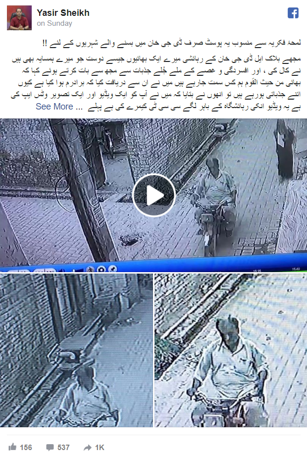
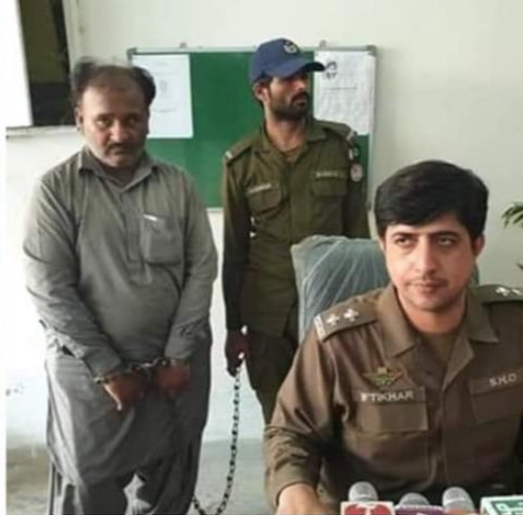

An old man who physically arrested a student is now behind bars
On the morning of 21nd July, 2019 a man named Munir Ahmed physically harassed a young student while she was on her way to the School. His crime was recorded on a nearby CCTV Camera which was made public by the owners and spread all across the Pakistani Internet demanding his immediate arrest.
CCTV recording.
In the footage it can be clearly seen he approached the student and without any sort of hesitance touched her in an inappropriate manner and went off. Luckily, he had not much luck and the local police came into swift action. Within 2 days his arrest was made, and now he will be facing charges.
Police Officials during a public breifing.
Pakistan ranks one of the least safest countries to be a woman and the participation of women in the workforce is also amongst the lowest in the world. Events like these are a common occurrence, however If the police can show such professionalism nationwide, perhaps things can progress.
Also Read: From the people of Pakistan, a 100 bed hospital was inaugurated in Afghanistan.